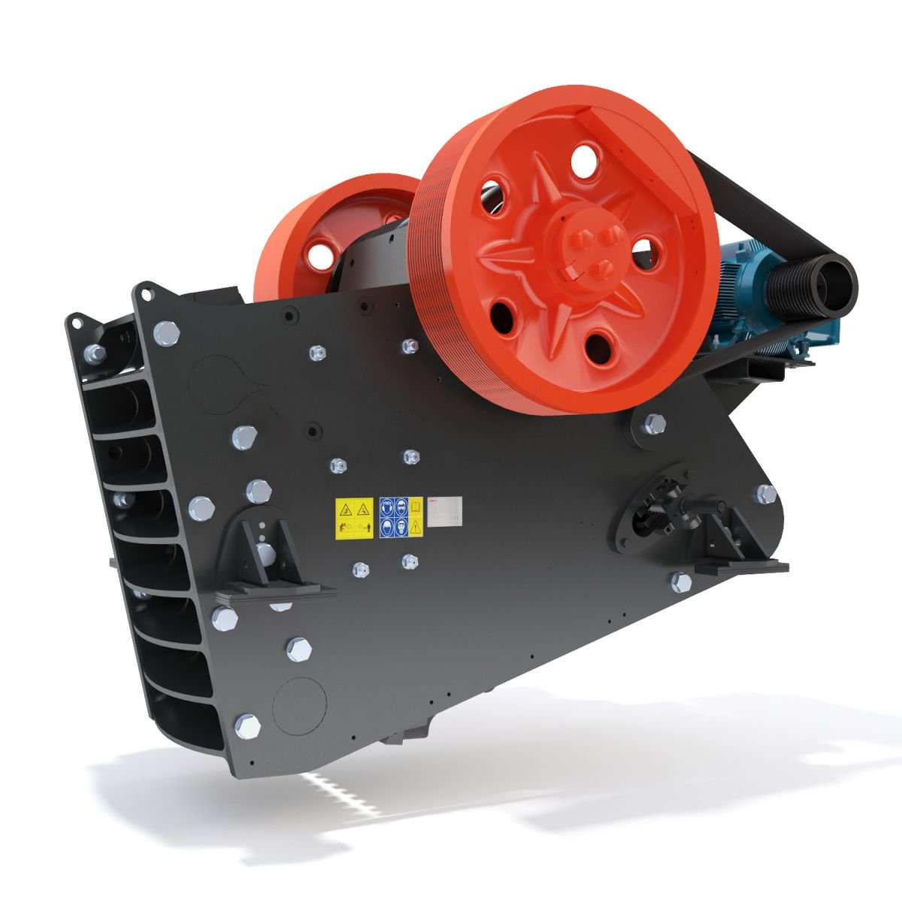
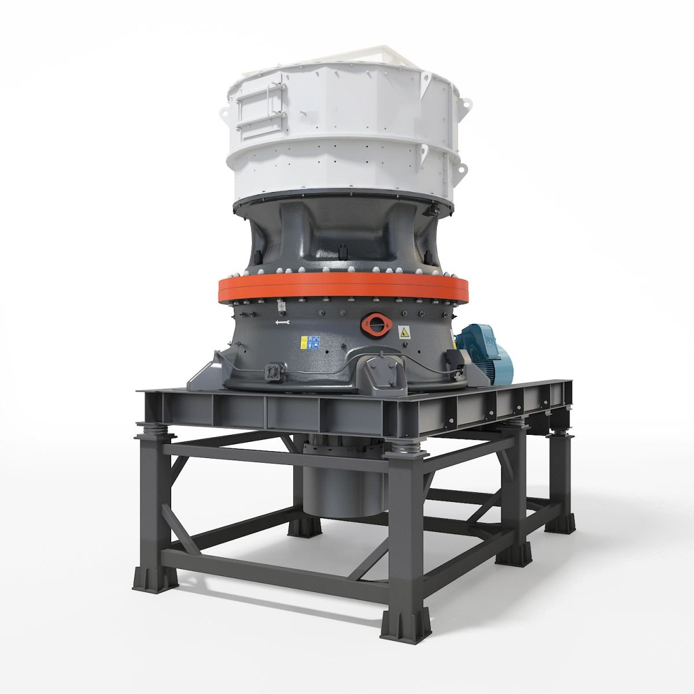

Trong ngành khai thác khoáng sản và sản xuất vật liệu xây dựng, việc lựa chọn nhà sản xuất máy nghiền đá là yếu tố ảnh hưởng trực tiếp đến hiệu suất sản xuất, chi phí vận hành và hiệu quả đầu tư của doanh nghiệp.
Những năm gần đây, các nhà sản xuất thiết bị nghiền đá Trung Quốc ngày càng được nhiều doanh nghiệp, chủ đầu tư Việt Nam quan tâm nhờ danh mục sản phẩm đa dạng, khả năng tùy chỉnh cấu hình và mức đầu tư linh hoạt. Nhiều dòng máy nghiền hàm, máy nghiền côn, máy nghiền VSI và hệ thống nghiền sàng đồng bộ được ứng dụng trong các mỏ đá, nhà máy vật liệu xây dựng và dự án khai thác khoáng sản.
Tuy nhiên, không phải nhà sản xuất nào cũng có thế mạnh giống nhau. Có đơn vị tập trung vào giải pháp trạm nghiền tổng thể, có đơn vị chú trọng độ bền cơ khí, trong khi một số nhà sản xuất lại có lợi thế về khả năng tùy biến thiết bị theo yêu cầu thực tế.
Trong bài viết này, Máy nghiền đá Thanh Long giới thiệu 5 thương hiệu máy nghiền đá Trung Quốc đáng tham khảo: MP Mining, FCS, KY, NMS và AMPCO, đồng thời phân tích những tiêu chí quan trọng giúp chủ đầu tư lựa chọn thiết bị phù hợp.
1MP Mining – Giải pháp máy nghiền đá và trạm nghiền đồng bộ
MP Mining là thương hiệu được biết đến trong lĩnh vực cung cấp thiết bị và giải pháp nghiền đá tại Trung Quốc. Danh mục thiết bị của MP hướng đến các hệ thống nghiền sàng phục vụ khai thác đá xây dựng và sản xuất vật liệu xây dựng.
Một trong những điểm đáng chú ý của MP Mining là khả năng kết hợp nhiều công đoạn nghiền trong cùng một dây chuyền, giúp chủ đầu tư xây dựng hệ thống sản xuất theo công suất và yêu cầu sản phẩm đầu ra.
Các dòng thiết bị tiêu biểu của nhà sản xuất MP
- Máy nghiền hàm: Phục vụ công đoạn nghiền sơ cấp, giảm kích thước đá đầu vào.
- Máy nghiền côn thủy lực: Phục vụ nghiền trung gian và nghiền mịn, đặc biệt phù hợp với nhiều loại đá có độ cứng cao.
- Máy nghiền VSI: Sản xuất cát nhân tạo, cải thiện hình dạng hạt và hỗ trợ điều chỉnh thành phần sản phẩm.
- Sàng rung và băng tải: Phân loại, vận chuyển vật liệu trong dây chuyền.
Điểm đáng chú ý
- Có thể kết hợp nhiều thiết bị để hình thành dây chuyền nghiền sàng đồng bộ.
- Có các giải pháp nghiền trung và nghiền mịn.
- Phù hợp để xem xét trong những dự án cần công suất sản xuất ổn định.
- Có khả năng xây dựng cấu hình theo loại vật liệu và sản phẩm đầu ra.
Đặc biệt, máy nghiền côn đa xy lanh thủy lực và máy nghiền VSI là những dòng thiết bị đáng quan tâm của nhà sản xuất MP khi chủ đầu tư muốn tối ưu công đoạn nghiền thứ cấp, nghiền mịn và sản xuất cát nhân tạo.
2FCS (Fong Ciao Solutions) – Thiết bị nghiền đá hướng đến độ bền và tính kinh tế
FCS là thương hiệu thiết bị nghiền đá được quan tâm trong phân khúc máy nghiền công nghiệp. Các dòng thiết bị của hãng hướng đến kết cấu cơ khí chắc chắn, khả năng làm việc ổn định và tính kinh tế trong đầu tư.
Đối với các doanh nghiệp khai thác đá, việc lựa chọn thiết bị không chỉ phụ thuộc vào giá mua ban đầu mà còn cần xem xét chi phí đi kèm như chi phí bảo trì, vật tư hao mòn và khả năng duy trì sản xuất liên tục.
Các dòng thiết bị tiêu biểu
- Máy nghiền hàm: Nghiền sơ cấp, xử lý đá nguyên khai.
- Máy nghiền côn: Nghiền trung gian và nghiền mịn.
- Sàng rung phân loại: Phục vụ phân loại sản phẩm đầu ra.
Điểm đáng chú ý
- Kết cấu máy hướng đến khả năng chịu tải trong môi trường công nghiệp.
- Có các lựa chọn thiết bị cho nhiều công đoạn nghiền.
- Có thể xem xét cho các mỏ đá quy mô vừa và các dây chuyền nghiền sàng.
- Cần đánh giá chi phí phụ tùng và bảo trì theo điều kiện vận hành thực tế.
Trong đó, máy nghiền hàm dạng lắp ghép bằng bulông là một trong những dòng thiết bị đáng quan tâm khi chủ đầu tư xem xét giải pháp nghiền sơ cấp.

3KY – Giải pháp thiết bị nghiền đá có khả năng tùy biến
Đối với những dự án khai thác có điều kiện mặt bằng, vật liệu và công suất khác nhau, khả năng tùy chỉnh thiết bị là một yếu tố quan trọng.
KY là thương hiệu được biết đến với các giải pháp thiết bị có khả năng điều chỉnh theo yêu cầu từng dự án, thay vì chỉ tập trung vào một cấu hình tiêu chuẩn.
Các dòng thiết bị tiêu biểu
- Máy nghiền côn thủy lực.
- Máy nghiền côn lò xo.
- Máy nghiền hàm.
- Các thiết bị sàng rung phục vụ dây chuyền sản xuất đá xây dựng.
Điểm đáng chú ý
- Có thể xem xét điều chỉnh cấu hình theo nhu cầu sản xuất.
- Hỗ trợ xây dựng phương án thiết bị theo từng giai đoạn đầu tư.
- Có nhiều lựa chọn trong phân khúc nghiền trung và nghiền mịn.
- Phù hợp với những dự án cần cân đối giữa công suất, ngân sách và khả năng mở rộng.
Máy nghiền côn thủy lực là một trong những dòng sản phẩm đáng chú ý của KY. Bên cạnh đó, máy nghiền côn lò xo truyền thống cũng có thể là phương án cần xem xét đối với những doanh nghiệp ưu tiên chi phí đầu tư ban đầu.

4NMS – Thiết bị nghiền đá công nghiệp cho điều kiện làm việc tải nặng
NMS là thương hiệu thiết bị nghiền và sàng khoáng sản của Trung Quốc, được biết đến trong lĩnh vực máy móc phục vụ khai thác mỏ và sản xuất vật liệu.
Đối với các mỏ khai thác đá cứng như granite, bazan hoặc những loại đá có tính mài mòn cao, chủ đầu tư cần đặc biệt chú trọng đến kết cấu máy, khả năng chịu tải và tuổi thọ của các chi tiết chịu mài mòn.
Các dòng thiết bị tiêu biểu của NMS
- Máy nghiền hàm.
- Máy nghiền côn.
- Máy nghiền phản kích.
- Sàng rung phân loại.
- Thiết bị nghiền và sàng trong khai thác khoáng sản như máy nghiền bi, máy tách từ,…
Điểm đáng chú ý
- Danh mục thiết bị phục vụ các công đoạn nghiền khác nhau.
- Có thể xem xét cho các dây chuyền sản xuất công nghiệp.
- Cần đánh giá khả năng làm việc với vật liệu có độ cứng và độ mài mòn cao.
- Chú trọng kiểm tra kết cấu máy, công suất động cơ và khả năng cung ứng phụ tùng.
Đối với các dự án quy mô lớn, việc đánh giá NMS nên được thực hiện trên cơ sở thông số kỹ thuật thực tế, kết quả thử nghiệm vật liệu và khả năng đáp ứng sản lượng thiết kế.
5AMPCO – Danh mục thiết bị nghiền đá đa dạng
AMPCO là một thương hiệu được đưa vào danh sách các nhà cung cấp thiết bị nghiền đá đáng tham khảo cho chủ đầu tư đang tìm kiếm giải pháp thiết bị công nghiệp.
Khi lựa chọn nhà sản xuất, một danh mục sản phẩm đa dạng giúp nhà đầu tư có thêm phương án xây dựng cấu hình dây chuyền theo từng loại vật liệu và yêu cầu sản xuất.
Các dòng thiết bị cần quan tâm từ nhà sản xuất AMPCO
- Máy nghiền hàm.
- Máy nghiền côn.
- Máy nghiền cát.
Điểm đáng chú ý
- Có thể xem xét các giải pháp nghiền ở nhiều công đoạn.
- Danh mục sản phẩm hướng đến nhiều nhu cầu xử lý vật liệu.
- Có thể đánh giá trong các dự án cần xây dựng dây chuyền nghiền đồng bộ.
- Cần kiểm tra năng lực sản xuất, hồ sơ kỹ thuật và dịch vụ hậu mãi trước khi quyết định đầu tư.
Đối với AMPCO, các chủ đầu tư nên yêu cầu catalogue, thông số kỹ thuật, danh sách phụ tùng và hồ sơ dự án tham khảo để có cơ sở đánh giá chính xác.
6Bảng so sánh 5 thương hiệu máy nghiền đá Trung Quốc
Mỗi nhà sản xuất có định hướng phát triển và danh mục thiết bị riêng. Thanh Long đã tổng hợp những đặc điểm chính để chủ đầu tư thuận tiện tham khảo.
| Thương hiệu | Định hướng tham khảo | Thiết bị đáng quan tâm |
|---|---|---|
| MP Mining | Giải pháp nghiền sàng đồng bộ | Máy nghiền côn thủy lực, VSI |
| FCS | Thiết bị nghiền công nghiệp | Máy nghiền hàm, máy nghiền côn |
| KY | Giải pháp thiết bị tùy biến | Máy nghiền côn thủy lực, côn lò xo |
| NMS | Thiết bị nghiền và sàng công nghiệp | Máy nghiền hàm, nghiền côn |
| AMPCO | Danh mục thiết bị nghiền đa dạng | Máy nghiền hàm, côn, máy nghiền cát |
“ Đây là bảng tổng hợp định hướng tham khảo từ Máy Nghiền Đá Thanh Long, không phải bảng xếp hạng chất lượng hay đánh giá hiệu suất độc lập. Khả năng đáp ứng thực tế cần được xác minh qua hồ sơ kỹ thuật, thử nghiệm vật liệu và điều kiện bảo hành của từng nhà sản xuất.”
7Kinh nghiệm lựa chọn nhà sản xuất máy nghiền đá Trung Quốc
Việc lựa chọn nhà sản xuất không nên chỉ dựa trên giá thành hoặc xuất xứ thiết bị. Một dây chuyền nghiền đá hoạt động hiệu quả cần được thiết kế đồng bộ với điều kiện khai thác thực tế.
Dưới đây là 6 tiêu chí các chủ đầu tư nên xem xét:
7.1Xác định loại vật liệu cần nghiền
Độ cứng, độ mài mòn, độ ẩm và kích thước đá đầu vào ảnh hưởng trực tiếp đến việc lựa chọn máy nghiền.
Ví dụ:
- Đá granite và bazan: Cần chú trọng khả năng chịu mài mòn và lựa chọn máy nghiền phù hợp cho vật liệu cứng.
- Đá vôi: Có thể xem xét máy nghiền hàm kết hợp máy nghiền phản kích hoặc máy nghiền côn tùy cấu hình.
- Sỏi sông: Cần đánh giá phương án nghiền côn, VSI và khả năng tạo hình hạt.
7.2Xác định công suất dây chuyền
Chủ đầu tư cần xác định sản lượng mục tiêu theo giờ, ngày và tháng.
Một số mức công suất thường được sử dụng để tham khảo:
- 100–150 tấn/giờ: Dây chuyền quy mô nhỏ và vừa.
- 200–300 tấn/giờ: Dây chuyền quy mô trung bình.
- Trên 350 tấn/giờ: Dây chuyền quy mô lớn.
Công suất thực tế cần được tính toán dựa trên đặc tính vật liệu, tỷ lệ cấp liệu, kích thước sản phẩm và điều kiện vận hành.
7.3Đánh giá chất lượng và kết cấu thiết bị
Trước khi lựa chọn, cần yêu cầu nhà sản xuất cung cấp:
- Bản vẽ tổng thể và bản vẽ lắp đặt.
- Thông số động cơ và hệ thống truyền động.
- Vật liệu chế tạo các bộ phận chịu mài mòn.
- Thông số ổ trục, hệ thống bôi trơn và làm mát.
- Catalogue và tài liệu hướng dẫn vận hành.
7.4Kiểm tra khả năng cung ứng phụ tùng
Đây là yếu tố đặc biệt quan trọng đối với các mỏ đá vận hành liên tục.
Các bộ phận như má hàm, áo côn, bạc đồng, tấm lót, búa nghiền và các chi tiết chịu mài mòn cần có nguồn cung ổn định.
Nếu thời gian chờ phụ tùng kéo dài, nhà máy có thể phải dừng toàn bộ dây chuyền, gây thiệt hại đáng kể về sản lượng và doanh thu.
7.5Quan tâm đến dịch vụ kỹ thuật và bảo hành
Một nhà sản xuất có thiết bị tốt nhưng thiếu dịch vụ kỹ thuật tại thị trường Việt Nam vẫn có thể khiến chủ đầu tư gặp khó khăn khi vận hành.
Nên ưu tiên các đơn vị có khả năng hỗ trợ:
- Khảo sát và tư vấn cấu hình.
- Hướng dẫn lắp đặt và chạy thử.
- Đào tạo đội ngũ vận hành.
- Cung cấp phụ tùng thay thế.
- Bảo trì và xử lý sự cố kỹ thuật.
7.6Tính toán tổng chi phí sở hữu (TCO)
Giá mua thiết bị chỉ là một phần của tổng chi phí đầu tư.
Chủ đầu tư cần tính toán thêm:
- Chi phí điện năng.
- Chi phí vật tư hao mòn.
- Chi phí nhân công vận hành.
- Chi phí bảo trì và sửa chữa.
- Thời gian dừng máy.
- Tuổi thọ thiết bị.
Một thiết bị có giá mua ban đầu thấp chưa chắc mang lại hiệu quả kinh tế tốt nếu tiêu hao điện lớn, phụ tùng đắt hoặc thường xuyên phải dừng máy.
8Máy Nghiền Đá Thanh Long – Tư vấn và cung cấp giải pháp máy nghiền đá tại Việt Nam
Với kinh nghiệm hoạt động trong lĩnh vực thiết bị nghiền đá và vật liệu xây dựng, Công ty Cổ phần Thiết bị và Dịch vụ Kỹ thuật Thanh Long (Máy Nghiền Đá Thanh Long) cung cấp giải pháp thiết bị và dây chuyền nghiền sàng cho các chủ đầu tư trong khai thác khoáng sản, mỏ đá xây dựng và nhà máy sản xuất vật liệu.
Thanh Long không chỉ tập trung vào việc cung cấp từng thiết bị riêng lẻ mà còn chú trọng đến hiệu quả vận hành của toàn bộ dây chuyền.
Dịch vụ kỹ thuật đồng hành cùng khách hàng
Thanh Long triển khai các công việc từ khảo sát mỏ, tư vấn lựa chọn thiết bị, thiết kế cấu hình dây chuyền đến lắp đặt, chạy thử và bảo trì.
Các giải pháp được xem xét dựa trên:
- Đặc tính cơ lý của vật liệu.
- Kích thước đá đầu vào.
- Sản lượng yêu cầu.
- Kích thước sản phẩm đầu ra.
- Điều kiện mặt bằng và nguồn điện.
- Chi phí vận hành và kế hoạch đầu tư dài hạn.
Với phương án thiết kế phù hợp, chủ đầu tư có thể tối ưu công suất, giảm chi phí vận hành và nâng cao hiệu quả khai thác.
Máy Nghiền Đá Thanh Long – Đồng hành cùng chủ đầu tư trong giải pháp nghiền đá và sản xuất vật liệu xây dựng.
9Liên hệ Thanh Long để được tư vấn giải pháp máy nghiền đá
Bạn đang tìm kiếm máy nghiền đá Trung Quốc, máy nghiền hàm, máy nghiền côn hay dây chuyền nghiền sàng đồng bộ?
Hãy liên hệ Máy Nghiền Đá Thanh Long để được đội ngũ kỹ thuật hỗ trợ lựa chọn thiết bị phù hợp với điều kiện khai thác và kế hoạch của đầu tư.
CÔNG TY CỔ PHẦN THIẾT BỊ VÀ DỊCH VỤ KỸ THUẬT THANH LONG
- Hotline / Zalo0912 712 772
- Emailhieu@labcare.com.vn
- Websitethegioimaynghienda.com
MÁY NGHIỀN ĐÁ THANH LONG – Giải pháp thiết bị nghiền đá, cát nhân tạo và dây chuyền nghiền sàng công nghiệp.